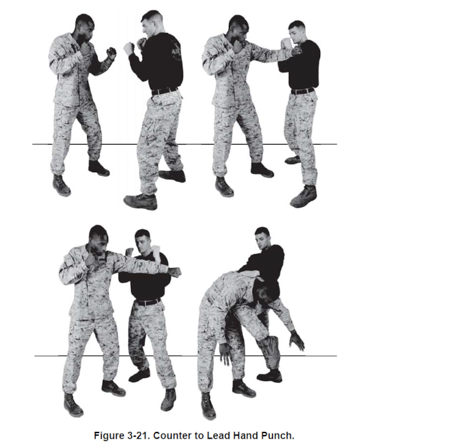
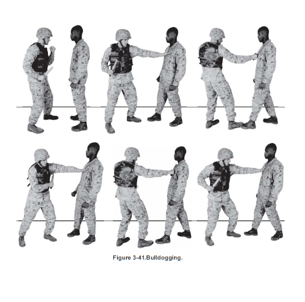

Welcome to the Grey Belt! You will find technique information below
What is the Grey Belt
The gray belt is a belt recived after the Tan belt. "The gray belt focuses on ground fighting, combining close-quarter combat techniques, hand to hand fighting and instruction to the Warrior Ethos. It also promotes character development and teamwork through the three MCMAP disciplines: mental, physical and character. To get to gray belt, a Marine is required to about six hours of sustainment from the previous belt. On the last day of training, the students are tested for previous belt knowledge and must demonstrate gray belt techniques and tie-ins (i.e. ethics, morals, Corps values) with at least 80 percent accuracy." - America's Navy Press.
How to obtain the Gray Belt
"To get to gray belt, a Marine is required to about six hours of sustainment from the previous belt. On the last day of training, the students are tested for previous belt knowledge and must demonstrate gray belt techniques and tie-ins (i.e. ethics, morals, Corps values) with at least 80 percent accuracy." - America's Navy Press.
Techniques
Bayonet Techniques
TOTAL LESSON TIME:1 hour
Disrupt And Thrust While Closing With A Static Aggressor
Source:MCMAP 1. Assume the modified basic warrior stance approximately 20 to 30 feet away from the aggressor.
2. Approach the aggressor by moving at a fast walk, using your legs to absorb the impact of your steps. Ensure the bayonet stays locked on the aggressor and it is not bouncing as you move.
3. As you reach the critical distance of 5 to 10 feet from the aggressor you will use a burst of speed to close the final distance in a controlled aggressive manner. 4. While closing, disrupt the aggressor’s weapon by rotating your body slightly to the right, moving their bayonet slightly off line. You only need to redirect the aggressor’s weapon a couple of inches to have the weapon miss your body. This will give your blade a clear path to your primary target. 5. Enter by stepping forward and thrusting the blade of the weapon directly into the target. Continue to drive through the aggressor. Additional Help Video
6. Retract to the modified basic warrior stance, scan the area for additional threats, and prepare for follow on attacks.
Upper Body Strikes
TOTAL LESSON TIME:1 hour 45 minutes
Outside/Forward Knife Hand Strike
Source:MCMAP
1. From the basic warrior stance, make a knife hand with your right hand (like saluting) and bring it back over your right shoulder and rotate your right hip and shoulder backwards.
2. Thrust your knife hand forward (horizontally) into the aggressor while rotating your right hip and shoulder forward.
3. Rotate your wrist so your palm is up. Contact should be made on the aggressor with the meaty portion of the knife hand.
4. Follow through the target with your hand and rapidly return to the basic warrior stance. Additional Help Video
Inside/Reverse Knife Hand Strike
Source:MCMAP
1. From the basic warrior stance, make a knife hand with your right hand (like saluting) and bring it back over your left shoulder and rotate your right hip and shoulder forward.
2. Thrust your knife hand forward (horizontally) into the aggressor while rotating your right hip and shoulder backwards.
3. Rotate your wrist so your palm is down. Contact should be made on the aggressor with the meaty portion of the knife hand.
4. Follow through the target with your hand and rapidly return to the basic warrior stance. Additional Help Video
Vertical Knife Hand Strike
Source:MCMAP
1. From the basic warrior stance, make a knife hand with your right hand (like saluting) and bring it back over your right shoulder and rotate your right hip and shoulder backwards.
2. Drop your knife hand down (vertically) onto the aggressor while dropping your body weight and rotating your right hip and shoulder forward.
3. Your palm should be facing inboard. Contact should be made on the aggressor with the meaty portion of the knife hand.
4. Follow through the target with your hand and rapidly return to the basic warrior stance. Additional Help Video Click here for video
Chin Jab/Palm Heel Strike
Source:MCMAP
1. From the basic warrior stance, bend your right wrist back at a 90 degree angle with your palm facing the aggressor and your fingers pointing up. Extend your hand into a flat position with your fingers bent and joined at the second knuckle.
2. Move forward to close with the aggressor by pushing off the ball of the right foot to direct your body weight into the attack from low to high.
3. Thrust the palm of your hand directly up under the aggressor’s chin while rotating your right hip and shoulder forward.
4. The attack should travel up the centerline of the aggressor’s chest to his chin. Contact should be made on the aggressor’s chin with the heal of your palm.
5. Follow through the target with your hand and rapidly return to the basic warrior stance. Additional Help Video Click here for video
Horizontal Rear Elbow Strike
Source:MCMAP
1. From the basic warrior stance, look back over your shoulder to acquire your target.
2. Thrust your right elbow horizontally backwards toward the aggressor while taking a slight step backwards to generate power and bring yourself within striking range of the aggressor.
3. The right forearm is parallel to the deck with the palm facing the deck. 4. Rotate your right hip and shoulder backwards to generate additional power.
5. Follow through the target with your elbow and rapidly return to the basic warrior stance.Click here for video
Vertical Elbow Strike High to Low
Source:MCMAP
1. From the basic warrior stance, bend your right elbow, keeping your fist close to your ear with your elbow at shoulder level.
2. Drop your elbow down (vertically) onto the aggressor while dropping your body weight and rotating your right hip and shoulder forward.
3. Follow through the target with your elbow and rapidly return to the basic warrior stance. Additional Help Video Click here for video
LOWER BODY STRIKES
TOTAL LESSON TIME:1 hour 30 minutes
Horizontal Knee Strike
Source:MCMAP
1. From the basic warrior stance, grab the aggressor’s neck or gear with both hands without interlacing your fingers. If you interlace your fingers, your aggressor can pull back or reach behind their head and break the fingers.
2. Pull the aggressor down and at the same time raise your right knee driving it up forcefully into the aggressor. Power is generated by pulling the aggressor down and thrusting the knee horizontally with your hips.
3. Follow through the target with your knee and rapidly retract to the basic warrior stance. Additional Help Video Click here for video
Side Kick
Source:MCMAP
1. From the basic warrior stance, look to your right to acquire the target and raise your right knee waist high. You will have to shift your body weight to your left leg to maintain your balance.
2. Thrust your right foot to the right, making contact on the aggressor with the outside cutting edge of your right boot.
3. Follow through the target with your foot and rapidly retract to the basic warrior stance. Additional Help Video Click here for video
Axe Stomp
Source:MCMAP
1. From the basic warrior stance, raise the knee of your right foot above waist level. Your right leg should be slightly bent. Shift your body weight to your left leg to maintain your balance.
2. Forcefully drive the cutting edge of your right heel down onto the aggressor while keeping your right knee slightly bent.
3. At the same time, bend your left knee slightly to drop your body weight into the strike.
4. Rapidly retract to the basic warrior stance. Additional Help Video Click here for video
CHOKES
TOTAL LESSON TIME:45 minutes
Front Choke
Source:MCMAP 1. Begin by facing the aggressor in the basic warrior stance.
2. Grab high in the back of your aggressor’s right collar with your right hand, palm facing up. Hold the collar tight in your right palm.
3. Reach under your right arm with your left hand and grab the back of the aggressor's left collar, palm facing up, forming an X with your wrists. Attempt to make your thumbs touch behind the aggressor’s neck.
4. Curl your wrist inward and pull down toward your chest. The aggressor's carotid arteries will be cut off by yourradius bones. Ensure you apply pressure on the carotid arteries and not the trachea. Additional Help Video Click for video
Throws
TOTAL LESSON TIME:1 hour
Hip Throw
Source:MCMAP 1. Start facing the aggressor in the basic warrior stance.
2. Grasp the aggressor's right wrist with your left hand and step in between his feet with your right foot.
3. Rotate on the ball of your right foot and bring your left foot to the same placement inside the aggressor’s feet. Your heels should be together and your knees should be bent.
4. At the same time, hook your right arm around the back of the aggressor’s body and pull him in close to you. Your backside and hip should be lower than and outside your aggressor’s hips and in a position of leverage.
5. Pull your aggressor’s right arm across your body and slightly lift the aggressor off the deck by bending at the waist, straightening your legs, and rotating your body to your left. If the aggressor cannot be easily lifted, your body position is incorrect.
6. Drive the aggressor to the deck by forcing him over your hip and following through with the throw.
7. Rapidly return to the basic warrior stance. Additional Help Video Click here for video
COUNTERS TO STRIKES
TOTAL LESSON TIME:1 hour
Counter to a Lead Hand Punch
Source:MCMAP 1. Start facing the aggressor in the basic warrior stance. The aggressor executes a lead hand punch by extending his left arm toward your face.
2. Execute a forward right angle of movement, moving in toward the aggressor at approximately a 45 degree angle. Ensure your left foot is forward with your toe pointing toward the aggressor.
3. At the same time, block the aggressor's left arm with the meaty portion of your left forearm. Do not over extend your arm and reach for the block.
4. Follow through by applying pressure against the aggressor's arm to redirect the strike and throw the aggressor off balance.
5. Execute at least three effective follow-on techniques to the aggressor's vulnerable target areas to end the fight.
6. Return to the basic warrior stance. Additional Help Video Click here for video
Counter to a Lead Leg Kick
Source:MCMAP 1. Start facing the aggressor in the basic warrior stance. The aggressor executes a front kick by extending his left leg above waist level.
2. Execute a forward right angle of movement, moving in toward the aggressor at approximately a 45 degree angle. Ensure your left foot is forward with your toe pointing toward the aggressor.
3. At the same time, block the aggressor's left leg with the meaty portion of your left forearm. Do not bend down or reach for the block. If the kick is below your waist, keep your hands up while you move out of the way of the attack.
4. Follow through by applying pressure against the aggressor's leg to redirect the strike and throw the aggressor off balance.
5. Execute at least three effective follow-on techniques to the aggressor's vulnerable target areas to end the fight.
6. Return to the basic warrior stance. Additional Help Video Click here for video
COUNTERS TO CHOKES AND HOLDS
TOTAL LESSON TIME:1 hour 30 minutes
Counter to the Front Choke Source:MCMAP
1. Start with the aggressor facing you and placing you in a front choke with both of his hands around your neck.
2. With your left hand, strike and grasp the aggressor's right forearm at the elbow and apply downward pressure on the radial nerve with your fingers. This will loosen the aggressor's grip and clear your airway.
3. Execute a chin jab/palm heel strike to the aggressor’s chin with your right hand between the aggressor’s arms. Generate power by pushing off the ball of your right foot and stepping forward with your left foot to the outside of the aggressor’s right foot.
4. Return to the basic warrior stance. Additional Help Video Click for video
Counter to the Front Bear Hug Source:MCMAP
1. Start with the aggressor facing you and placing you in a front bear hug with both of your arms included in his grasp.
2. Drop your body weight down, step out with your left leg, and flare your elbows to break the aggressor’s grip.
3. Grasp the upper portion of the aggressor’s torso with your right hand near his armpit, and grasp his lower torso with your left hand near his hip.
4. Step forward with your left foot to the outside of the aggressor’s right foot, and off-balance the aggressor by pushing with your right hand and pulling with your left hand.
5. Execute a leg sweep to drive the aggressor to the deck.
6. Return to the basic warrior stance. Additional Help Video Click for video
Counter to the Front Headlock Source:MCMAP
1. Start with the aggressor standing facing you and placing you in a front headlock with his right arm.
2. Clear the airway by grabbing the aggressor's wrist and forearm with both hands and forcefully pulling down. Once the airway is clear, tuck your chin to protect your airway and prevent the aggressor from re-applying the choke.
3. Maintain control of the aggressor’s right wrist with your left hand and grasp his left shoulder with your right hand.
4. Step forward with your left foot to the outside of the aggressor’s right foot, and off-balance the aggressor by pushing with your right hand and pulling with your left hand.
5. Execute a leg sweep to drive the aggressor to the deck.
6. Return to the basic warrior stance. Additional Help Video Click for video
1. Begin by executing a basic wristlock on the aggressor’s left hand. Ensure you have the correct grip and the aggressor’s hand is tight in your chest.
2. Step outside the aggressor’s left foot with your right foot and pivot to your left so you are facing the same direction as the aggressors on his left side. Maintain pressure on the aggressor’s wrist with your left hand.
3. At the same time, release your right hand and quickly reach behind and under the aggressor’s left arm. Grab the aggressor’s hand with your fingers on top of his hand and your thumb across his palm. His fingers should be pointing away from you.
4. Change the grip of your left hand to match your right hand. The aggressor’s upper arm should be controlled between your biceps and forearm with his elbow pointing down. Keep your elbows tight together and the aggressor’s hand tight to your chest.
5. Maintain pressure on the aggressor’s wrist with your right hand and trace your left hand down his arm to grab his elbow.
6. Rotate the aggressor’s elbow up while bringing his wrist down to the center of his back. Maintain inward and upward pressure on the aggressor’s wrist and elbow to control him throughout the movement.
7. Push down on the aggressor’s calf or Achilles tendon with your right foot to bring him to the deck. Maintain control of the aggressor’s wrist and elbow. The aggressor’s arm may straighten as he goes to the deck.
8. Kneel down with both knees on either side of the aggressor’s arm, placing both knees on his back. Bring the aggressor’s left arm across your right thigh and apply inward pressure with your knees to lock the aggressor’s arm in place. Additional Help Video Click for video
Double Flexi Cuffing Technique
Source:MCMAP 1. Begin by grasping the flexi cuffs with your outside hand in the center of the cuffs with the loops pointing up. Place the cuff on the aggressor’s controlled wrist. Ensure you maintain pressure on the aggressor’s wrist by controlling his hand.
2. Using proper verbal commands, instruct the subject to place his free hand in the center of his back, look away, and cross ankles. Take your outside hand and slip it through the free cuff.
3. Break down the arm naturally and “shake” the aggressor’s hand with your outside hand. Slip the cuff on after the shake is complete and properly secure the cuff. Additional Help Video Click for video
Escort Position
Source:MCMAP 1. Begin facing the aggressor in a static stance.
2. Step outside the aggressor’s right foot with your left foot and grab his right wrist with your right hand.
3. Pivot on your left foot and step out with your right so you face the same direction as the aggressor. Ensure the aggressor’s right palm is facing away from your torso.
4. Grab the aggressor’s right shoulder with your left hand, driving your thumb into his armpit on his brachial plexus tie-in.
5. Position the aggressor’s right arm diagonally across your torso, keeping his wrist against your right hip. You should be standing to the right of and behind the aggressor. Use your chest to apply pressure on the aggressor’s elbow.
6. Release your grasp on the aggressor’s shoulder with your left hand apply downward pressure on or slightly above his elbow with your left forearm, executing an armbar takedown.
7. Kneel down with both knees on either side of the aggressor’s arm, placing both knees on his back. Bring the aggressor’s right arm across your left thigh and apply inward pressure with your knees to lock the aggressor’s arm in place. Additional Help Video Click for video
1. Begin by grasping the flexi cuffs with your outside hand. Place the cuff on the aggressor’s controlled wrist and grasp the cuff with your ring or pinky finger. Ensure you maintain pressure on the aggressor’s wrist by controlling his hand.
2. Using proper verbal commands, instruct the subject to place his free hand in the center of his back, look away, and cross ankles. Take your outside hand and slip it through the free cuff.
3. Break down the arm naturally and “shake” the aggressor’s hand with your outside hand. Slip the cuff on after the shake is complete and properly secure the cuff. Addtional Help Video Click for video
ARMED MANIPULATIONS
TOTAL LESSON TIME:1 hour
Off-Balancing While Stationary Opponent is Pushing Source:MCMAP
1. Start facing the aggressor in the port arms position. The aggressor grabs your weapon with both hands and begins to push into you.
2. Step back with your left foot and pivot your body to the left.
3. At the same time, lower the muzzle and swing the butt of the weapon up in a quick jerking movement.
4. Utilize the aggressor’s momentum and movement to throw him past you or to the deck.
5. When the aggressor releases the weapon, step back to increase the distance between you and the aggressor.
6. Transition to the ready carry and aim in on the aggressor. Additional Help Video Click for video
Off-Balancing While Stationary Opponent is Pulling Source:MCMAP
1. Start facing the aggressor in the port arms position. The aggressor grabs your weapon with both hands and begins to pull away from you.
2. Step on the aggressor’s foot and push forward to off-balance him and drive him to the deck. 3. When the aggressor releases the weapon, step back to increase the distance between you and the aggressor.
4. Transition to the ready carry and aim in on the aggressor. Additional Help Video Click for video
Off-Balancing while Opponent is Pulling and Moving Source:MCMAP
1. Start facing the aggressor in the port arms position. The aggressor grabs your weapon with both hands and begins to pull away from you while moving backwards.
2. Extend the weapon away from your body to gain distance.
3. Quickly pull the weapon tight to your body and step forward with your left foot to the outside of the aggressor’s right foot.
4. Drive the aggressor to the deck by executing a leg sweep while pushing the weapon across his torso.
5. When the aggressor releases the weapon, step back to increase the distance between you and the aggressor.
6. Transition to the ready carry and aim in on the aggressor. Addtional Help Video Click for video
Counter to Over-Hand Grab Strike with Weapon Source:MCMAP
1. Start facing the aggressor in the port arms position. The aggressor grabs the hand guards of your weapon with his right hand palm down. Attempt counter to the over-hand grab(Tan Belt).
2. Slide your left hand up the hand guards and trap the aggressor’s finger with your thumb to hold his hand in place with bone pressure.
3. Step forward with your right foot and execute a buttstroke to the inside or outside of the aggressor’s leg.
4. Step back with your right foot and rotate the muzzle, placing it parallel to the aggressor’s arm.
5. Drop your body weight to apply downward pressure on the aggressor’s elbow, affecting an armbar.
6. When the aggressor releases the weapon, step back to increase the distance between you and the aggressor.
7. Transition to the ready carry and aim in on the aggressor. Additional Help Video Click for video
Counter to Under-Hand Grab Strike with Weapon Source:MCMAP
1. Start facing the aggressor in the port arms position. The aggressor grabs the hand guards of your weapon with his right hand palm up. Attempt counter to the under-hand grab (Tan Belt).
2. Slide your left hand up the hand guards and trap the aggressor’s finger with your thumb to hold his hand in place with bone pressure.
3. Step forward with your right foot and execute a buttstroke to the inside or outside of the aggressor’s leg.
4. Step back with your left foot and pivot your body to the left.
5. At the same time, lower the muzzle and swing the butt of the weapon up in a quick jerking movement to throw the aggressor past you or to the deck.
6. When the aggressor releases the weapon, step back to increase the distance between you and the aggressor.
7. Transition to the ready carry and aim in on the aggressor. Additional Help Video Click for video
KNIFE TECHNIQUES
TOTAL LESSON TIME:1 hour
Forward Slash Source:MCMAP
1. Start facing the aggressor in the modified basic warrior stance.
2. Extend your right hand to make contact with the knife blade around the aggressor’s left shoulder.
3. Rotate your palm up to make the blade contact the aggressor. Do not move your arm outside the box, shoulder-width across from your neck to your waistline. 4. Continue dragging the knife down and across the aggressor's body, from your right to your left.
5. The movement ends with your forearm against your body and the knife at your left side, blade oriented toward the aggressor.
6. Return to the modified basic warrior stance Additional Help Video Click for video
Reverse Slash Source:MCMAP
1. Start facing the aggressor in the modified basic warrior stance.
2. Extend your right hand across your body to make contact with the knife blade around the aggressor’s right shoulder.
3. Rotate your palm down to make the blade contact the aggressor. Do not move your arm outside the box, shoulder-width across from your neck to your waistline.
4. Continue dragging the knife down and across the aggressor's body, from your left to your right.
5. Return to the modified basic warrior stance. Additional Help Video Click for video
Forward Thrust Source:MCMAP 1. Start facing the aggressor in the modified basic warrior stance.
2. Extend your right hand toward the aggressor, palm down, inserting the knife blade into the target.
3. Once the knife is inserted, twist the blade inward, rotating your palm up.
4. Bring the knife to the opposite side of the aggressor's body from where it was inserted. Turning the blade and cutting your way out rather than pulling the knife straight out causes more damage to the aggressor.
5. The movement ends with your forearm against your body and the knife at your left side, blade oriented toward the aggressor.
6. Return to the modified basic warrior stance. Additional Help Video Click for video
Reverse Thrust Source:MCMAP 1. Start facing the aggressor in the modified basic warrior stance.
2. Extend your right hand across your body toward the aggressor, palm up, inserting the knife blade into the target.
3. Once the knife is inserted, twist the blade inward, rotating your palm down.
4. Bring the knife to the opposite side of the aggressor's body from where it was inserted. Turning the blade and cutting your way out rather than pulling the knife straight out causes more damage to the aggressor.
5. Return to the modified basic warrior stance. Additional Help Video Click for video
Bulldogging Source:MCMAP
1. Start facing the aggressor in the modified basic warrior stance.
2. Maintaining a low silhouette and move forward in a normal walking motion. While moving forward, perform a thrusting or slashing technique.
3. After each knife technique, execute an open hand strike to the aggressor’s face with your lead hand.
4. Follow each lead hand strike with another thrusting or slashing technique to a vulnerable target area.
5. Continue moving forward, thrusting/slashing, and striking the aggressor until he is killed or disabled. Additional Help Video Click for video
WEAPONS OF OPPORTUNITY
TOTAL LESSON TIME:1 hour Purpose:The purpose of weapons of opportunity is to use anything on the battlefield to inflict maximum damage on the aggressor. Target Areas:The objective with a weapon of opportunity is to attack vital target areas readily accessible such as the face, neck, torso, and groin. The extremities are secondary targets that are not immediately fatal, but will often open up fatal target areas.
Straight Thrust Source:MCMAP
1. Start facing the aggressor in the modified basic warrior stance with a two handed grip.
2. Move forward, pushing off with your rear foot to close the distance and generate power.
3. At the same time, thrust your weapon straight into your aggressor with both hands. The weapon is thrusted at a slight upward angle or parallel to the deck, depending on the target area.
4. Return to the modified basic warrior stance Additional Help Video Click for video
Vertical Strike Source:MCMAP
1. Start facing the aggressor in the modified basic warrior stance with a one handed grip.
2. Rotate your right forearm straight down at the elbow to forcefully bring the weapon down on the aggressor. At the same time, forcefully rotate your hips and shoulders toward the aggressor.
3. Shift your body weight to your left foot and drop your body weight into the aggressor from high to low.
4. Follow through with the strike by allowing the weight of the weapon to go through the target.
5. Return to the modified basic warrior stance Additional Help Video Click for video
Forward Strike Source:MCMAP
1. Start facing the aggressor in the modified basic warrior stance with a one handed grip.
2. Step forward into the strike with your left foot while forcefully rotating your hips, shoulders and forearm to the inside at the elbow to bring the weapon down on to the aggressor.
3. Follow through with the strike by allowing the weight of the weapon to go through the target.
4. Return to the modified basic warrior stance. Additional Help Video Click for video
Reverse Strike Source:MCMAP 1. Start facing the aggressor in the modified basic warrior stance with a one handed grip.
2. Quickly bring your right hand across your body toward your left shoulder with the weapon extended over your right shoulder.
3. Rotate your forearm to the right at your elbow to bring the weapon down on to the aggressor while forcefully rotating your hips and shoulders toward the aggressor.
4. Follow through with the strike by allowing the weight of the weapon to go through the target.
5. Return to the modified basic warrior stance. Additional Help Video Click for video
GROUND FIGHTING
TOTAL LESSON TIME:1 hour 30 minutes Purpose: The purpose of ground fighting is to get back to your feet as quickly as possible.
Counter To The Mount
Source:MCMAP 1. Begin by lying on your back with the aggressor mounted on top of you.
2. Grab the aggressor's gear or clothing on their upper torso and pull them down close to you, while thrusting your hips upward. This off-balances the aggressor and will cause him to extend his arms in front of him and place his hands on the ground to regain his balance.
3. With your right arm, over hook your aggressor’s arm, from the inside around to the outside, above his elbow causing him to bend his elbow. 4. Draw your elbow in and drive the knuckles of your right hand into his chest to bring him down close to you.
5. With your right foot, hook the aggressor's left leg or ankle to prevent him from using his leg to base out.
6. With your left hand, strike the aggressor's right side and push off with your left leg to roll the aggressor off of you to your right side. Avoid being pulled into the aggressor’s guard by bridging at a 45 degree angle over your right shoulder.
7. Maintain control of the aggressor’s hooked arm and go to a squatting position on his left side. The aggressor should be lying on his right side.
8. Keep pressure on the aggressor’s hip with your left knee and use your hands (palm-to-palm or figure-four) to apply pressure against the aggressor’s left elbow. Forcefully turn to your right and arch your back as you rise to break the aggressor’s arm and/or shoulder.
9. Return to the basic warrior stance Additional Help Video Click for video
Counter To The Guard
Source:MCMAP 1. Begin with your aggressor lying on his back with you in his closed guard.
2. With your elbows, strike your aggressor’s femoral nerve on the inside of his legs to open his guard.
3. With your right fist, strike your aggressor’s groin and hook your left arm underneath the aggressor's right knee. Ensure your upper body is low and your chin is tucked.
4. Quickly throw the aggressor’s right leg over your head with your left arm as you move to your left.
5. Return to the basic warrior stance. Additional Help Video Click for video
 Source:MCMAP
Source:MCMAP